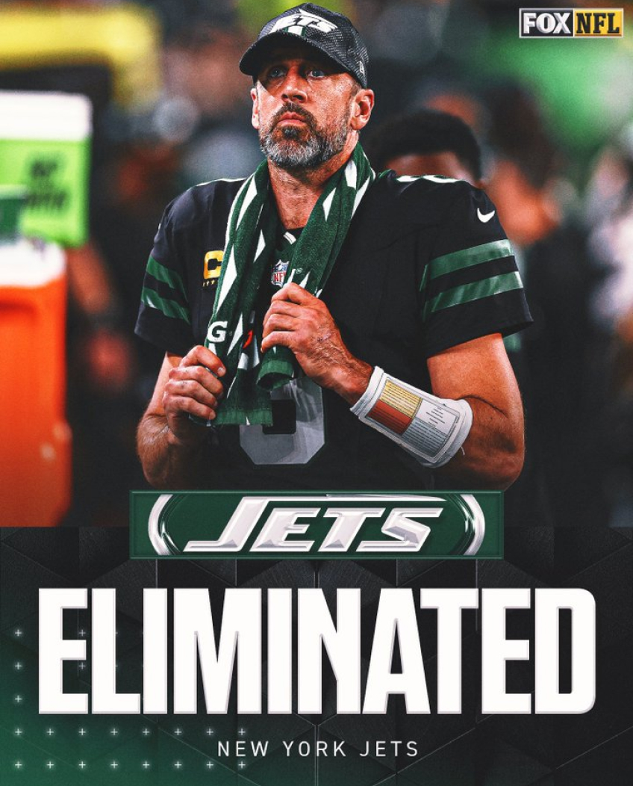
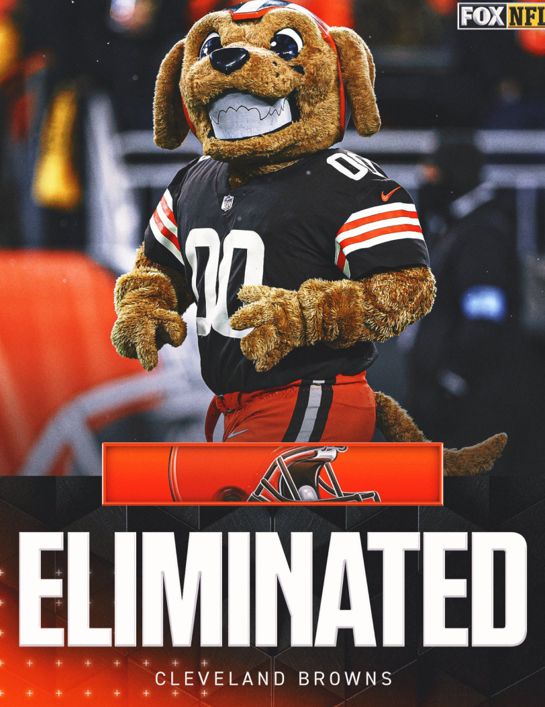
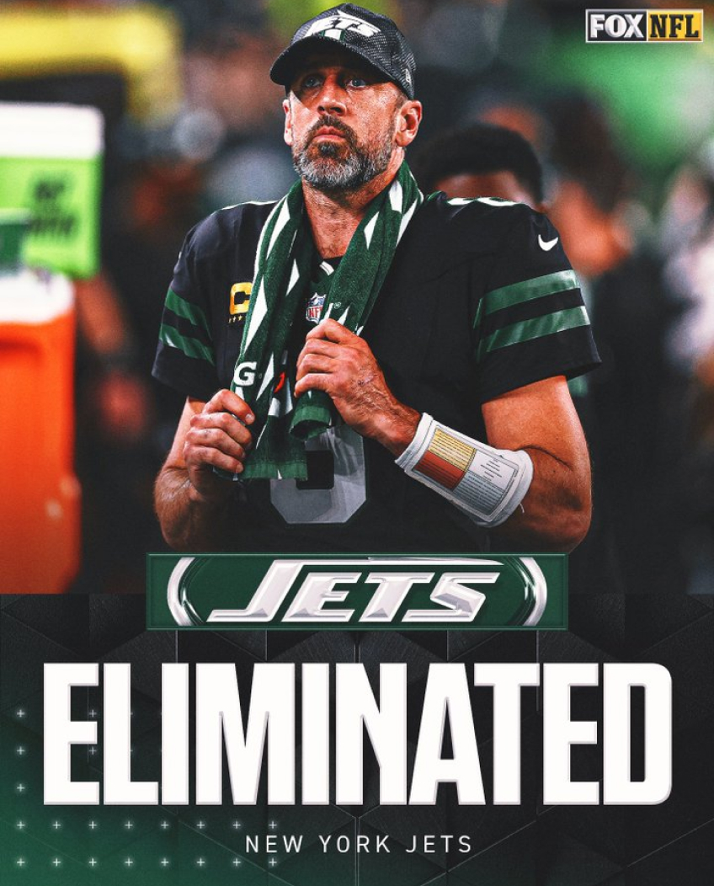
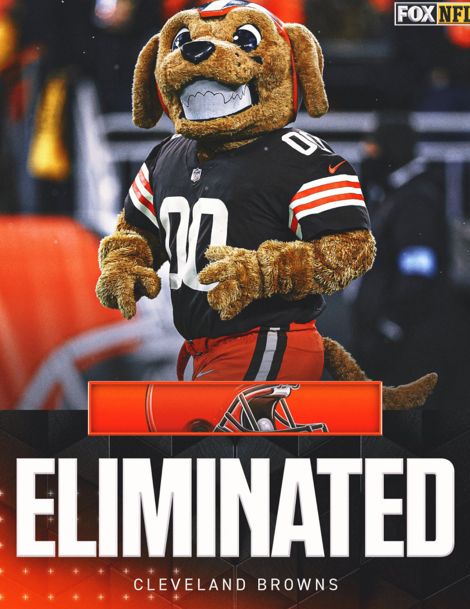

Estos son los eliminados de
playoffs NFL 2024-2025
 



La temporada 2024-2025 de la NFL se mantiene al rojo vivo, durante
el desarrollo de esta Semana 14 continúan definiéndose los clasificados
a la postemporada y también los equipos que se juegan la vida y los
que se han quedado sin aspiración alguna por playoffs.
Los equipos eliminados de los NFL Playoffs.
Por ahora 7 equipos se han quedado sin posibilidad alguna de poder
avanzar a los playoffs en esta temporada:
De la Conferencia Americana: New England Patriots (3-10),
Las Vegas Raiders (2-11), Jacksonville Jaguars (3-10),
Tennesse Titans (3-10),New York Jets (3-10) y Cleveland
Browns (3-10) quedaron eliminados.
De la Conferencia Nacional: Los que ya se han quedado sin
aspiraciones son los New York Giants (2-11).